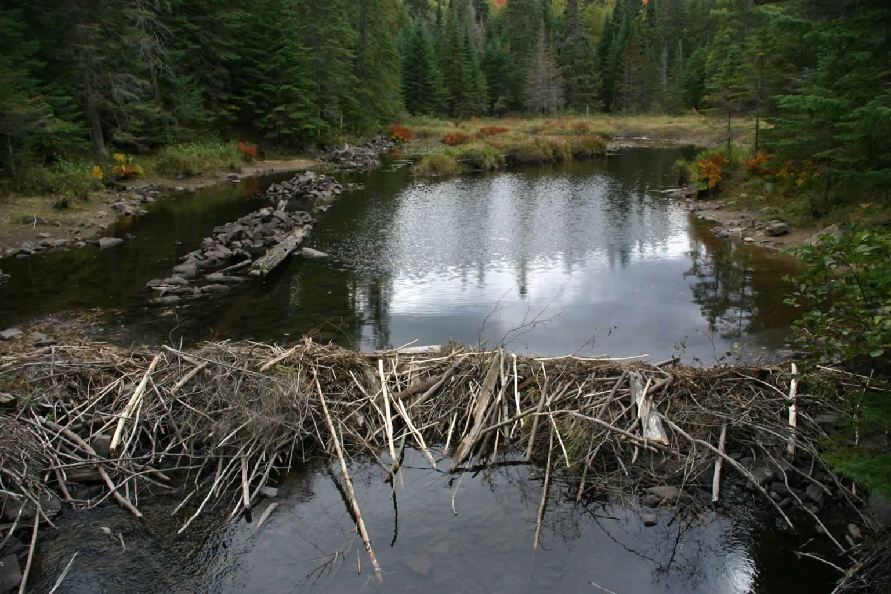

01
Mens
Reflectie, zingeving en handelingsruimte in een complexe werkelijkheid.

Ik werk met mensen, teams en organisaties die willen begrijpen wat er speelt, wat er kan ontstaan en hoe ze in beweging kunnen komen.
Niet met een kant-en-klaar stappenplan, maar door te onderzoeken wat zichtbaar is én wat zich onder de oppervlakte afspeelt.
Reflectie, zingeving en handelingsruimte in een complexe werkelijkheid.
Samen onderzoeken, verantwoordelijkheid nemen en nieuwe mogelijkheden verkennen.
Werken met de onderstroom, ideologie en het grotere geheel.
Naast mijn praktijk schrijf en onderzoek ik over organisatieverandering, ideologie, technologie, complexiteit en de spanning tussen wat is en wat kan zijn.

Vrijheid en ideologie in de geest van Žižek.
Lees artikel →
On freedom, ideology and democratic change in organizations.
Lees artikel →
Kwalitatief onderzoek naar levenskunstig handelen in een vrijblijvende omgeving.
Lees meer →Mijn werk beweegt tussen begeleidingskunde, organisatieontwikkeling, filosofie, technologie en onderzoek. Ik probeer niet alle complexiteit weg te nemen. Ik wil haar bespreekbaar maken.
IN VERSUS is het werk van Evert Nolta. Vanuit begeleidingskunde, organisatieontwikkeling en filosofie onderzoek ik samen met anderen de spanning tussen wat is en wat kan zijn.
Mijn recente werk richt zich onder meer op ideologie, vrijheid, democratie, complexiteit en de vraag hoe we in organisaties werkelijk ruimte maken voor verandering.
Laten we onderzoeken wat er speelt, wat mogelijk is en welke beweging past.